灵活性陷阱：重新审视扩散语言模型“任意顺序生成”的价值
The Flexibility Trap: Rethinking the Value of Arbitrary Order in Diffusion Language Models
阅读状态、进度与收藏只保存在你的浏览器里。本页依据 arXiv v4（2026-06-08）和官方仓库代码；v1–v3 的标题是 The Flexibility Trap: Why Arbitrary Order Limits Reasoning Potential in Diffusion Language Models，Semantic Scholar 等处仍可能显示旧标题。
逐节精读
这部分按论文的章节顺序，用本站自己的话把整篇论文从头讲一遍。读懂某个概念需要的背景知识，会在第一次用到它之前单独讲清楚（青色框）。每个结论都尽量说出“因为什么、所以什么”。论文以 CC BY 4.0 发布，所以原图直接放在讲到它的地方，并说明怎么看；原图没画到的概念，用本站的示意图补上。附录里的补充实验放在它所支撑的那一节一起讲。标“推算”的数字是本站根据论文或官方代码算出来的，标“读图估计”的是从原图上读出的近似值，都不是论文原话。每节末尾有英文原文的链接。
0 导读：这篇论文解决什么问题
扩散语言模型（dLLM）和常见的自回归（AR）语言模型生成文字的方式不同。AR 模型从左到右，一次写一个 token；掩码扩散模型（如 LLaDA、Dream）则先在回答的位置上铺满“空白”（[MASK]），再分很多步把空白一个个或一批批填上。由此带来两个常被宣传的优点：一是并行解码，一步可以填好几个位置，所以可能更快；二是任意顺序生成，模型可以先填后面、再填前面，不受从左到右的限制。
第二个优点经常被当作“扩散模型推理能力可能超过 AR 模型”的理由。理由是这样的：AR 模型只能走从左到右这一条路；扩散模型可以走任何顺序，其中当然也包括从左到右，所以它能走的路是 AR 的超集，按理只会更强。数独、斑马谜题上的成功（见 Token Ordering 精读）加强了这种印象。于是 2025 年以来，给扩散模型做强化学习（RL）的方法，例如 d1、SPG、ESPO、GDPO，都花了很大力气在训练里“保住”任意顺序，代价是似然算不准、要用各种近似。
这篇论文把这个默认的假设拿出来检验，得到了一个反直觉的结果：在数学和代码这类通用推理任务上，实际使用的任意顺序解码反而让模型能采到的正确解变少。作者用 Pass@\(k\)（采 \(k\) 次至少对一次的概率）衡量“RL 最多能学到哪里”，发现任意顺序在 \(k=1\) 时不输甚至更好，但 \(k\) 一大就被从左到右的顺序超过。原因是：按置信度挑位置的解码器会先写有把握的部分，把 “Therefore”“Since” 这类不确定性高、决定推理走向的“分叉词”推迟到最后；等它回来补这些词时，后文已经写定，原本的多种可能被压成了一种。作者把这叫作熵退化。
既然任意顺序在 RL 里帮不上忙，作者就提出了一个极简的做法 JustGRPO：RL 训练时放弃任意顺序，把扩散模型当成从左到右的策略来用——前文可见、后文全部遮住，只读下一个位置的预测。这样每个 token 的概率都能精确算出来，标准的 GRPO 可以原封不动地用上；而模型结构不变（不加因果掩码），推理时仍能并行解码。在 LLaDA-8B-Instruct 上，JustGRPO 在 GSM8K 上达到 89.1%、MATH-500 上 45.1%（生成长度 256），在作者统一协议下重新训练的几个基线中最高；用并行采样器加速解码时，它相对原模型的优势还更大。
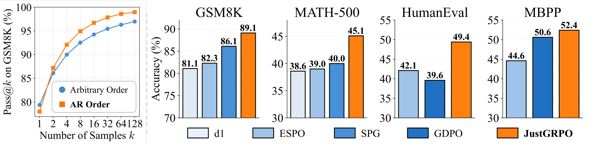
这篇论文在 ICML 2026 上做了口头报告，并获得杰出论文奖。它的价值主要在于把一个大家默认的假设拆开检验，并给出了一个容易复现的替代方案；它的数字有哪些地方要打折扣，§5.6 会专门讲。
读完这部分，你应该能回答这几个问题：
- 掩码扩散模型的“任意顺序”在实际解码时是怎么决定的？它和“所有顺序都可能”有什么区别？
- 为什么 Pass@\(k\) 能代表“RL 最多能学到哪里”？它和 GRPO 的一组采样有什么关系？
- 什么是“分叉词”，“熵退化”指的是什么，它为什么会让 Pass@\(k\) 变低？
- 现有扩散 RL 方法为了保住任意顺序付出了哪些代价？JustGRPO 怎样绕开它们？
- 训练时从左到右，推理时为什么还能并行解码？代价是什么？
- 89.1% 这样的数字是和什么比、在什么条件下得到的，哪些地方要打折扣？
1 引言：“任意顺序是超集”的直觉为什么会落空
AR 模型（如 GPT、Qwen、LLaMA）生成回答的方式是“接龙”：给定题目和已经写出的部分，预测下一个 token 的概率分布，从中选一个接上去，再预测下一个。第 \(k\) 个 token 只能在前 \(k-1\) 个都写定之后才能写，顺序是固定的。
掩码扩散模型（如 LLaDA、Dream）的网络是双向注意力的 Transformer：它看到的是一整段“部分位置已写定、其余位置是 [MASK]”的序列，一次前向就对所有空白位置各给出一个词分布。生成时从全是 [MASK] 的回答开始，每一步先让模型对所有空白位置做预测，再挑出其中一部分位置写定，其余的继续留空，下一步再来。“挑哪些位置写定”这个决定就是生成顺序。它可以是从左到右（每次只写最左边的空白），也可以是任何别的顺序。
“任意顺序是超集”这个说法在可能性上是对的：扩散模型能走的生成路径里确实包含了从左到右那一条。但模型推理能力的高低，取决于它实际会走哪些路径、走每条路径的概率有多大，而不是理论上能走哪些。实际使用的扩散解码器并不会“随机试遍各种顺序”，而是用一个固定的规则来挑位置：最常用的是挑模型最有把握（置信度最高）的位置先写。这条规则本身就是一种很强的偏好。打个比方：城市地图上有很多条路通往目的地，但导航软件永远推荐它认为最稳妥的那一条；你理论上能走所有的路，实际上每次走的都差不多是同一条。
作者要检验的是：这种“先写有把握的”偏好，对数学和代码这类需要探索的推理任务有什么影响。他们用 Pass@\(k\) 来衡量：对同一道题采 \(k\) 个回答，至少有一个对的概率。近期的研究认为，基于可验证奖励的 RL（RLVR）主要是把模型原本就能偶尔采到的正确解变得更常出现，而很难创造出模型完全采不到的解；所以 RL 之前模型的 Pass@\(k\)（\(k\) 较大时）可以看作 RL 之后能达到的上限。§2.3 会详细解释这个逻辑。
在这个尺子下，LLaDA-Instruct 的结果是：限制它只能从左到右生成，Pass@\(k\) 反而更高（原文图 1 左）。作者给出的解释和“分叉词”有关。
一段解题过程里，大多数 token 其实没什么悬念：抄题目里的数字、写完一个算式、补全一个常见短语，模型都很有把握。真正决定推理往哪走的，是少数几个位置，比如 “Therefore”“Since”“However”“Let”“First” 这类连接词或开头词：写 “Let x be …” 还是 “First, compute …”，后面的解法就不一样了。在这些位置上，模型的预测分布比较分散（熵高），因为好几种写法都说得通。
本文作者所在实验室参与的一项工作（Wang et al. 2025，“Beyond the 80/20 Rule”，NeurIPS 2025）在 AR 模型上发现：思维链里只有一小部分 token 的熵高，它们就像路口，决定了后面走哪条推理路线；RLVR 主要改变的也是这些高熵 token 的熵，只在约 20% 的高熵 token 上算策略梯度，效果就能和全部 token 相当，在更大的模型上甚至更好。本文把这类 token 叫作分叉 token（forking tokens）。
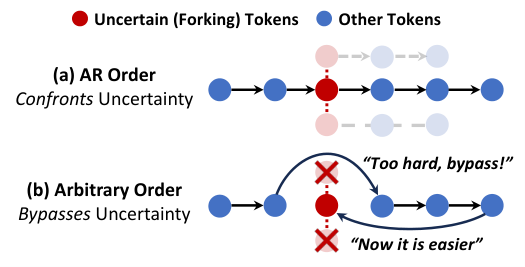
论文的论证链条是这样的：从左到右的解码迫使模型在分叉处当场采样，于是不同的采样会走进不同的推理分支，解法的多样性得以保留；任意顺序则允许模型跳过分叉，先把容易的部分（往往包括结论）写定，再回头填连接词。回头填的时候，后文已经限定了答案，连接词只剩一个说得通的选项，分叉处原本的高熵被压低。作者把这个现象叫作熵退化（entropy degradation）。效果是：模型不再在路口选择方向，而是事后补一个连接词去衔接已经写好的结论。
这个发现直接冲击了现有的扩散 RL 方法。它们都默认“必须保留任意顺序”，并为此付出很重的“税”：要面对组合爆炸的去噪轨迹，要处理算不出来的序列似然，只能依赖不准确的近似（§4.1 细讲）。如果任意顺序对这些任务不是必需的，甚至是有害的，那这些复杂性就可以省掉。JustGRPO 就是这个思路的产物：RL 训练时把扩散模型当作 AR 策略，直接用标准 GRPO。作者强调，这个 AR 形式只是训练时的“脚手架”，网络结构不变、不加因果掩码，所以“用顺序生成来引出推理能力”和“用并行解码来提速”这两件事被拆开了。
2 预备知识：掩码扩散怎么生成，GRPO 怎么学，Pass@k 量的是什么
2.1 掩码扩散模型：随机遮住、整体猜回，生成时按置信度挑位置
训练。取一段干净的序列 \(x_0\)，随机抽一个遮盖比例 \(t\in[0,1]\)，然后对每个位置独立地以概率 \(t\) 把它换成 [MASK]，得到 \(x_t\)：
这里 \(k\) 是位置编号。网络 \(p_{\theta}(x_0\mid x_t)\) 看着 \(x_t\)，对每个被遮的位置猜原来的 token。训练目标是负的证据下界（ELBO），化简后就是“只在被遮位置上算交叉熵，再乘以 \(1/t\)”：
乘 \(1/t\) 的原因是：遮得越少，被遮的位置越少，这一项的损失本来就小，按 \(1/t\) 放大后，不同遮盖比例的贡献才能对得上 ELBO。这个损失取负号就是 ELBO，它只是对数似然的下界，而不是精确值，§4.1 会用到这一点。更详细的推导见 LLaDA 精读 §2.1。
生成。从全是 [MASK] 的回答开始，每一步：(1) 网络对所有空白位置给出词分布；(2) 在每个空白位置上按分布采样（或取最大）得到一个候选 token；(3) 按某种规则挑出一部分位置，把候选写定；(4) 其余位置保持 [MASK]，进入下一步。第 (3) 步的规则就决定了生成顺序。论文讨论的几种：
- 低置信度重遮（low-confidence remasking）：LLaDA 的默认做法。每个候选 token 在自己分布里的概率叫它的置信度；保留置信度最高的几个，其余“重新遮回去”。名字听起来是“遮”，实际效果是“先写最有把握的”。本文所说的“任意顺序”（Arbitrary Order）就是这种。
- 半自回归分块：把回答切成长度为 \(B\) 的块，从左到右一块一块地生成；每一块内部再用上面的规则挑位置。块大小 \(B\) 决定了模型有多大的自由：\(B=1\) 时每块只有一个位置，就退化成纯粹的从左到右；\(B\) 越大，模型能在越大的范围里挑。LLaDA 的指令模型通常用 \(B=32\)。
- AR 顺序：永远只写最左边的那个空白位置。这是扩散模型的一个特例，不需要改网络。
- 其他规则：按熵最低挑（论文里叫 Neg-Entropy，引自 Dream）、按“第一名和第二名的概率差”最大挑（margin，引自 Token Ordering），或者完全随机。附录会比较它们。
2.2 GRPO：一组回答互相比较，比平均好的就多学一点
RL 后训练的基本循环是：模型（策略 \(\pi_{\theta}\)）对一道题 \(q\) 写出回答 \(o\)，程序检查答案、给出奖励 \(r(o)\)（例如答对为 1、答错为 0），然后调整参数，让高奖励回答的概率变大。最朴素的策略梯度是用“奖励减去一个基准”（叫优势 \(A\)）乘以 \(\nabla_{\theta}\log\pi_{\theta}(o\mid q)\)：优势为正的回答，概率被推高；为负的，被压低。
GRPO（DeepSeekMath 提出）的做法是：每道题采一组 \(G\) 个回答，用这组回答奖励的平均值 \(\mu_G\) 当基准、标准差 \(\sigma_G\) 做归一化，于是第 \(i\) 个回答的优势是 \(\hat A_{i,k}=(r(o_i)-\mu_G)/\sigma_G\)，这条回答里的每个 token 共用这个值。这样就不用另外训练一个价值网络。
为了能用同一批采样多更新几次而不跑偏，GRPO 沿用 PPO 的两个设计：一是重要性比值 \(\rho_{i,k}\)，即当前模型和采样时的旧模型给同一个 token 的概率之比；二是裁剪，把 \(\rho\) 限制在 \([1-\epsilon,1+\epsilon]\) 里，防止一步改得太猛。另外还可以加一项和参考模型的 KL 惩罚（系数 \(\beta\)）。
公式里最关键的一项是 \(\pi_{\theta}(o_{i,k}\mid o_{i,<k},q)\)：给定题目和前面的 token，第 \(k\) 个 token 的条件概率。对 AR 模型来说，把整条回答送进去做一次带因果掩码的前向，每个位置的这个概率就全有了，又便宜又精确。对扩散模型来说，这个量却没有现成的定义，因为它生成时并不是按“前面 → 后面”的顺序走的。这就是 §4.1 要讲的“灵活性税”的根源。
再看一个具体的例子，体会“一组采样里有没有答对的”有多重要。下图是 \(G=16\)（本文的组大小）时三种典型情况：
2.3 Pass@k：为什么用它衡量“RL 最多能学到哪里”
定义。Pass@\(k\) 是“对一道题独立采 \(k\) 个回答，至少有一个正确”的概率，再对所有题取平均。直接采 \(k\) 个只能得到一次 0/1 的结果，噪声很大，所以通常的做法（Codex 论文提出）是对每道题采 \(n\ge k\) 个，数出其中 \(c\) 个正确，再用无偏估计：
分数 \(\binom{n-c}{k}/\binom{n}{k}\) 是“从 \(n\) 个回答里随便抽 \(k\) 个，恰好全抽到错的”的概率，用 1 减掉它就是至少抽到一个对的概率。举个例子：采了 \(n=10\) 个、其中 \(c=2\) 个正确，求 Pass@4：全错的抽法有 \(\binom{8}{4}=70\) 种，总抽法 \(\binom{10}{4}=210\) 种，所以 Pass@4 \(=1-70/210\approx0.67\)（推算）。
为什么能代表 RL 的上限。上一小节的例子已经说明：RLVR 只能从“采样时偶尔采到的正确回答”中学习。如果一道题采了很多次都没有一个对的，GRPO 在这道题上就没有任何正向信号。同一实验室的 Yue et al. 2025（“Does RL Really Incentivize Reasoning Capacity in LLMs Beyond the Base Model?”）在 AR 模型上系统地比较了 RL 前后的 Pass@\(k\)：RL 之后 \(k=1\) 的准确率更高，但 \(k\) 很大时，反而是 RL 之前的基础模型更高；他们据此认为，RL 学到的能力来自并受限于基础模型的采样分布。本文接受这个看法，把基础模型在某种解码方式下的 Pass@\(k\) 当作“用这种解码方式做 RL 能达到的上限”的代理。
英文原文 §2 ↗ · §2.2 GRPO ↗ · §2.3 Pass@k ↗ · 相关：d1 精读 §2.2（GRPO 的更多细节）
3 灵活性陷阱：任意顺序反而采不到更多的解
3.1 实验怎么设计：两种顺序，只差这一处
作者比较两种解码模式。任意顺序（Arbitrary Order）是扩散模型的标准解码：低置信度重遮，半自回归块大小 32。AR 顺序（AR Order）关掉这种自由，严格从左到右。其余设置沿用此前扩散模型工作的常见配置：最多生成 256 个 token、共 256 步（所以每步写 1 个），采样温度 0.6（沿用 Yue et al. 2025），提示模板沿用 d1。被测模型有三个：LLaDA-Instruct、Dream-Instruct、LLaDA 1.5；基准有四个：GSM8K、MATH-500（数学），HumanEval、MBPP（代码）。
3.2 Pass@k 曲线：k = 1 不输，k 一大就落后
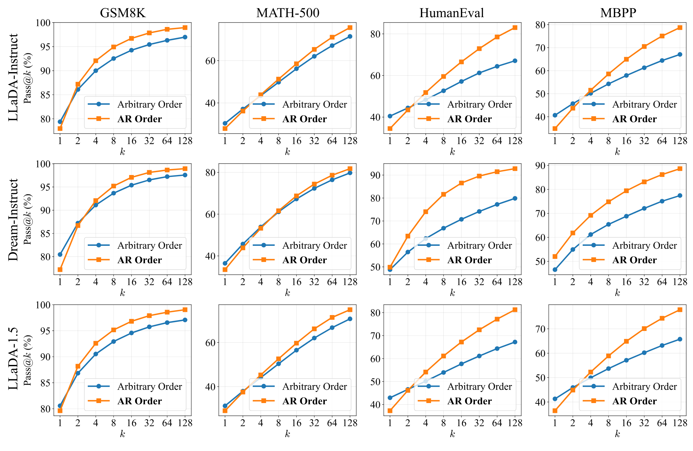
附录表 4 给出了 LLaDA-Instruct 的精确数字。以 HumanEval 为例：任意顺序的 Pass@1 是 40.5%，AR 顺序只有 34.5%，任意顺序领先 6 个点；到了 Pass@128，任意顺序是 67.1%，AR 顺序是 83.0%，反过来落后将近 16 个点。MBPP 上也是同样的交叉：Pass@1 为 40.7% 对 34.9%，Pass@128 为 67.1% 对 78.7%。
为什么会出现这种交叉？可以从“质量”和“探索”两个角度理解。先写有把握的 token，单次回答犯错的机会少，所以单次准确率（Pass@1）高，这是“质量”。但这种做法也让每次采样都倾向于走同一条最稳妥的路，多次采样之间差别不大，所以采得再多也覆盖不到新的解法，这是“探索”不足。从左到右在单次上没那么稳，但每次在分叉处都会真的随机选一次方向，多采几次就能覆盖更多不同的解法。Pass@\(k\) 随 \(k\) 增长的“斜率”，衡量的正是后一种能力。
3.3 解空间覆盖：任意顺序能解的题，几乎都在从左到右能解的范围里
有人可能会想：任意顺序也许只是效率低一些，但它探索的是另一片解空间，能解出一些从左到右解不出的题。作者用 LLaDA-Instruct 在 \(k=1024\) 下检验了这一点：把每个基准的题目分成“只有任意顺序解出”“只有 AR 顺序解出”“两者都解出”三类。
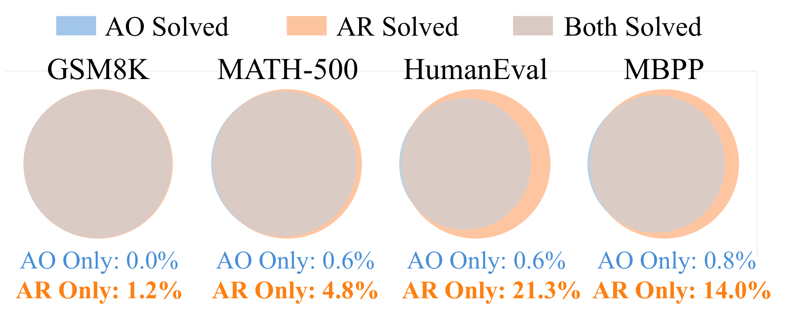
换算成题数更直观（推算）：HumanEval 有 164 题，21.3% 约 35 题只有从左到右能解出，0.6% 约 1 题只有任意顺序能解出；MATH-500 的 4.8% 约 24 题对 0.6% 约 3 题；GSM8K 测试集 1319 题，1.2% 约 16 题对 0 题。所以任意顺序能到达的解，基本是从左到右能到达的解的一个子集。理论上更大的解空间，在实际的采样方式下反而更小。
3.4 块大小扫描：给模型的自由越多，上限越低
前面的对比是两个极端。可是“自由度”不是非此即彼：§2.1 讲过，半自回归分块的块大小 \(B\) 决定了模型在多大的范围里挑位置。\(B=1\) 就是纯从左到右，\(B\) 越大，越接近完全的任意顺序。作者在 HumanEval 上扫了 \(B\in\{1,8,32,128\}\)。
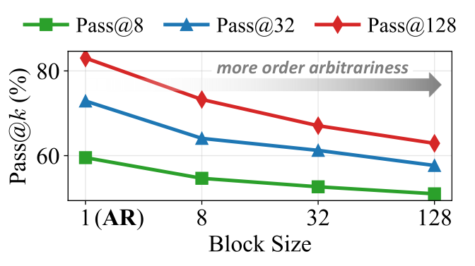
这张图的意义在于它排除了“只是两个极端恰好如此”的可能：在这个设置下，自由度每放开一档，Pass@\(k\) 就跟着降一档，趋势是连续、单调的。
3.5 机制：被绕开的分叉词与“熵退化”
为什么理论上更大的解空间，实际会塌缩？作者去看两种模式写定 token 的过程。AR 顺序每一步必须处理最左边的未知 token，不确定性出现在哪里，就得在哪里面对它。任意顺序则按置信度挑，总是优先写“容易”的高置信 token，绕开“难”的。统计哪些 token 最常被绕开（推迟写定），可以看到一个清楚的模式。
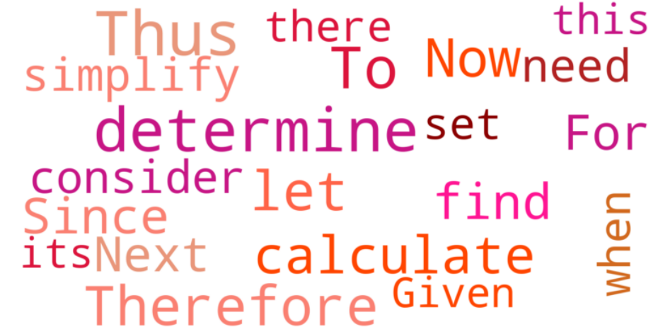
此前在 AR 模型上的研究表明，这类词正是高熵的分叉 token。作者验证了这在扩散模型里同样成立，然后测量了这些词在被写定的那一刻的熵。
一个位置的预测分布 \(p\) 的熵是 \(H(p)=-\sum_v p(v)\log p(v)\)。模型完全确定（某个词概率为 1）时熵为 0；在两个词之间各一半时，熵是 \(\log 2\)，按自然对数约 0.69；在 \(m\) 个词之间平均分配时，熵是 \(\log m\)。所以可以把 \(e^{H}\) 读成“相当于在几个等可能的选项里挑”。论文没有说明熵用的是自然对数还是以 2 为底，下面的换算按自然对数给出，仅供直觉参考。
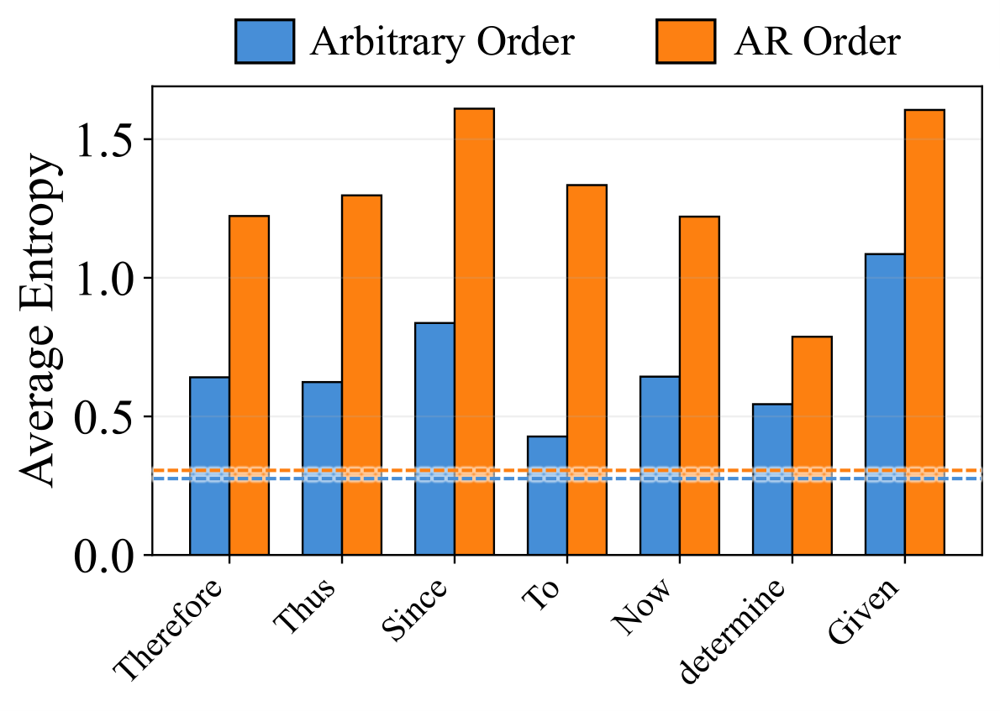
按自然对数粗略换算（推算）：AR 顺序下这些词的熵大多在 1.2–1.6 之间，相当于在 3 到 5 个等可能的写法里挑；任意顺序下降到 0.4–1.1，相当于 1.5 到 3 个。而全部 token 的平均熵约 0.3，相当于 1.35 个，几乎是确定的。这正好对应 §1 的“分叉词”画像：大多数 token 没有悬念，少数路口才有选择。
作者的解释是：任意顺序推迟了连接词，先写后面更容易的 token，再回头决定通往它们的逻辑连接。回头的时候，后文已经在场，不确定性被大幅压低，模型做的不再是“在路口选方向”，而更像是“为已经写好的结论补一个衔接词”。这就是熵退化。下面用一个玩具例子把这个过程画出来。
附录 C 把分叉词扩展到 26 个（Therefore、Thus、So、Since、When、Given、However、Let、First、Then、Next、Finally、Now、Similarly、Calculate、Solving、Notice、Specifically、Follows、Because、But、Or、Consider、Also、Express、Write），结论一致。
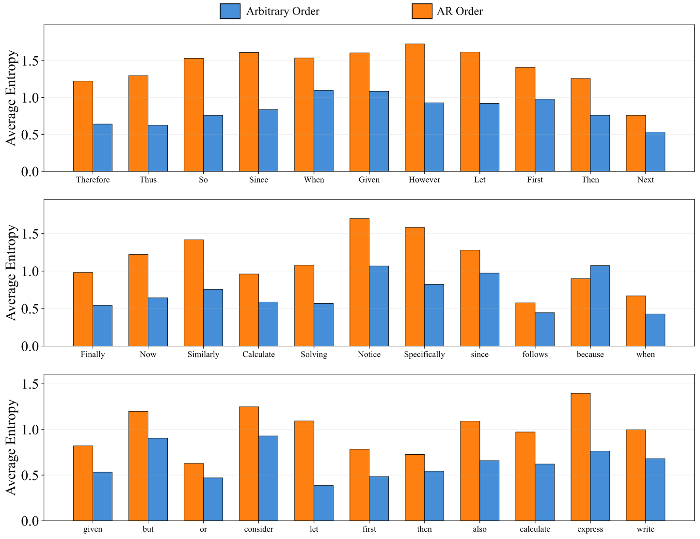
作者对这一节的总结是：在通用推理任务上，任意顺序的灵活性会不知不觉地偏向“推理时利用”（exploitation）而不是“探索”（exploration）。熵退化是这种倾向的一个量化标志：优先做低不确定性的决定，等于在生成早期就把轨迹锚定在某个结果上。这能带来更高的单次连贯性，却限制了复杂问题所需的广泛探索。从左到右的顺序因为绕不开关键决策点，保留了分叉处的高熵，多次采样能走进不同的推理分支，这正是 RL 需要的解空间覆盖。
3.6 附录 B–D 的补充检验：换温度、换采样规则、换成真正随机的顺序
换温度（附录 B.1）。一个自然的质疑是：任意顺序把熵压低了，那调高温度、人为增加随机性，是不是就能补回来？作者在 HumanEval 上把温度从 0.3 扫到 1.5，并把 \(k\) 扩到 256。
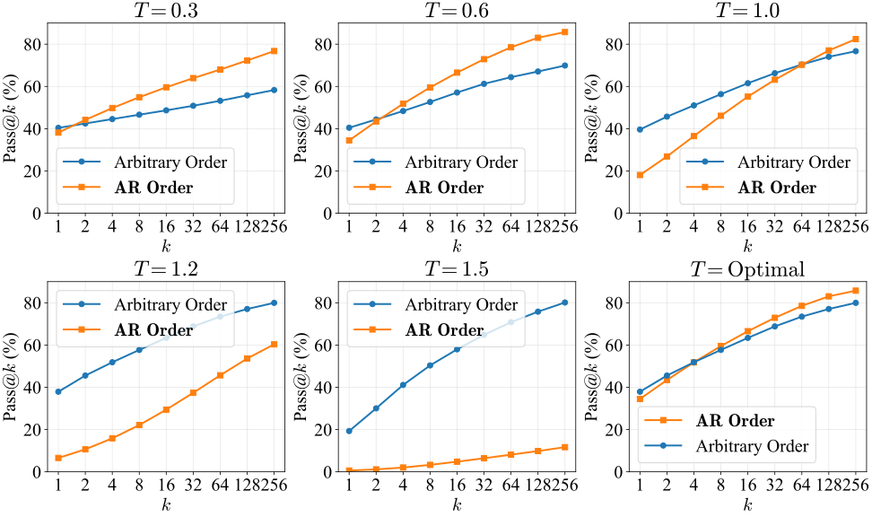
这个结果和熵退化的解释是吻合的：任意顺序的采样器在分叉处天然压低了不确定性，所以需要更高的温度才能激发足够的探索。可温度是对所有位置一视同仁的：调高温度虽然让分叉处更随机，也把噪声注入了本应确定的位置，比如代码语法、公式的后半截，于是生成出错误甚至无意义的输出。所以即使在最优温度下，任意顺序也追不上 AR 顺序。这一点也和 DiffuCoder 精读 §4.4 的观察呼应：扩散模型的温度会同时改变“写什么”和“先写哪”。
换采样规则（附录 B.2）。按置信度挑位置只是规则之一。作者还试了按熵最低挑（Neg-Entropy，引自 Dream）和按概率差最大挑（Top-\(k\) Margin，引自 Token Ordering）。
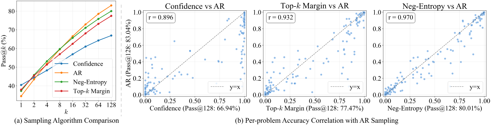
更讲究的规则确实比置信度规则的 Pass@\(k\) 高，但仍追不上 AR 顺序；同时它们的 Pass@1 比置信度规则略低，整条曲线更像 AR 顺序的曲线。右边的散点图把这一点说得更清楚：Pass@128 越高的规则，单题正确率和 AR 顺序的相关性越高，最好的 Neg-Entropy 达到 0.970。换句话说，一个采样规则越“像”从左到右，它的探索能力就越强。
散点图里还有一个值得注意的细节（本站读图）：在 Confidence 对 AR 的那张图里，很多点挤在横轴 1.0 的竖线上、纵坐标却从 0.1 一直分布到 1.0。这说明按置信度挑位置时，很多题要么每次都对，要么每次都错，几乎没有中间状态，采样结果高度确定；而同样的题在 AR 顺序下有时对、有时错，说明它在这些题上真的在“尝试不同的做法”。横轴 0 附近、纵轴大于 0 的点，就是按置信度永远做不对、从左到右偶尔能做对的题，也就是图 4 里的橙色月牙。
换成真正随机的顺序（附录 D）。前面批评的是置信度驱动的顺序。如果完全随机地挑位置（这其实最接近掩码扩散模型训练时的设定），分叉处就不会被系统性地推迟，情况会不会不同？作者的回答是：也不行，但坏在别处。
| 解码顺序（LLaDA-Instruct） | GSM8K | MATH-500 | MBPP | HumanEval |
|---|---|---|---|---|
| Pass@128（%） | ||||
| 置信度（任意顺序） | 97.0 | 71.4 | 67.1 | 67.1 |
| 完全随机 | 97.5 | 70.6 | 71.8 | 64.9 |
| 从左到右（AR） | 99.0 | 75.6 | 78.7 | 83.0 |
| Pass@1（%） | ||||
| 置信度（任意顺序） | 78.6 | 30.4 | 40.7 | 40.5 |
| 完全随机 | 43.3 | 14.1 | 15.0 | 12.4 |
| 从左到右（AR） | 78.0 | 27.9 | 34.9 | 34.5 |
数字来自原文附录表 4（注意原表的列顺序是 GSM8K、MATH-500、MBPP、HumanEval）。
随机顺序的 Pass@128 和置信度顺序差不多（有高有低），仍远低于从左到右；它的 Pass@1 则崩溃了，GSM8K 只有 43.3%，不到另两种的六成。原因很直接：扩散模型是根据周围已写定的上下文来预测一个 token 的，而随机顺序经常要求模型在上下文还不存在时就写定某个位置，例如只知道第 1 个 token 时就要写第 30 个。论文给了一个 LLaDA 的真实输出，其中的 LaTeX 公式残缺不全、运算符悬空、操作数缺失。这种输出几乎拿不到奖励，RL 也就没什么可学的。附录 D 还把随机顺序放进 RL 训练里试了，结果见 §5.5。
英文原文 §3 ↗ · 原文图 3 ↗ · 图 4 ↗ · 图 5 ↗ · §3.2 机制 ↗ · 附录 B ↗ · 附录 C ↗ · 附录 D ↗
4 JustGRPO：训练时把扩散模型当成从左到右的策略
4.1 灵活性税：保住任意顺序的 RL 要付出什么
现有的扩散 RL 方法都假定，策略必须能容纳所有可能的去噪轨迹 \(\mathcal T\)（也就是所有写定顺序），才算保住了任意顺序。这个设计在概念上很一般化，却带来三个难题。
难题一：逐 token 的分解有歧义。在扩散模型里，生成到某一步时的“状态”是一段部分遮住的序列，而它是怎么来的，取决于随机的写定轨迹 \(\tau\)。和 AR 模型不同，这里不存在一个唯一的、按位置对齐的条件概率 \(\pi(o_t\mid s_t)\)：同一个 token 在不同轨迹下是在不同的上下文里被写定的。于是“这个 token 该得多少功劳”说不清楚，GRPO 需要的逐 token 比值 \(\rho_t=\pi_{\theta}(o_t\mid s_t)/\pi_{\text{old}}(o_t\mid s_t)\) 也难以定义。
难题二：序列似然算不出来。AR 模型的序列对数似然可以按位置拆开相加：\(\log\pi(o)=\sum_t\log\pi(o_t\mid o_{<t},q)\)。扩散模型却要把所有可能的轨迹加起来：
长度为 \(N\) 的序列，写定顺序的数量随 \(N!\) 增长。以本文的 \(N=256\) 为例，\(256!\approx10^{507}\)（推算），精确计算毫无可能，所以现有方法只能用 ELBO 之类的替代量，优化的并不是原本的目标。
ELBO 是对数似然的一个下界：\(\log\pi_{\theta}(o)\ge\text{ELBO}(o)\)。它适合做预训练损失，因为把下界推高，通常也会把似然推高。但 RL 用的是似然的比值（新模型对旧模型），两个下界的差并不等于两个对数似然的差，而且下界本身还要用随机遮盖做蒙特卡洛估计，有方差。比值一旦有偏、有噪声，裁剪和优势加权都会跟着失真。d1 用“一次前向 + 均场近似”、SPG 用上下界把似然“夹住”、ESPO 用序列级的 ELBO，都是在这个问题上做不同的折中（见 d1 精读 §3.1、LLaDA 1.5 精读 §3.1）。
难题三：采样器和学习目标不一致。即使似然估得很准，还有一个更隐蔽的问题。实际做 RL 时，为了在组合空间里高效地采样，回答通常是用置信度规则生成的：\(o\sim\pi_{\theta}^{\text{conf}}(o\mid q)\)。但 ELBO 针对的是模型本身的分布 \(\pi_{\theta}(o\mid q)\)，也就是掩码扩散理论里“按随机顺序写定”所对应的那个分布，而不是实际采样策略 \(\pi_{\theta}^{\text{conf}}\) 的分布。采样用的是一个分布，优化的是另一个分布的似然，这就成了没有校正的“离策略”训练，会损害效果（TRPO 的理论早就指出这种不一致的危害）。
4.2 JustGRPO：前文可见、后文全遮，只读下一个位置
既然 §3 显示纯从左到右的顺序推理潜力更高，作者就在 RL 阶段明确放弃任意顺序。这一限制把扩散模型从一个“轨迹不定的序列去噪器”变成了一个定义清楚的自回归策略。
标准 GRPO 假设策略的形式是 \(\pi(o_k\mid o_{<k},q)\)：输入一段全部已知的前缀，一次预测一个 token。扩散模型的接口却不同：它输入一整段“部分已知、部分遮住”的序列，一次预测所有被遮位置。两者之间的桥梁是：要得到“给定前缀 \(o_{<k}\)，下一个 token \(o_k\)”的概率，就构造一个前缀可见、其余全遮的输入：
网络会对所有被遮位置给出预测，但 AR 策略只关心第 \(k\) 个位置，所以定义：
其中 \(f_{\theta,k}\) 是网络在位置 \(k\) 输出的 logits。这样，原本要对所有排列求和的似然，就变成了一个可以精确计算的连乘。
有了 \(\pi^{\text{AR}}_{\theta}\)，标准 GRPO 就可以直接套用：对每道题用旧策略 \(\pi^{\text{AR}}_{\theta_{\text{old}}}\) 采一组回答，目标函数和 §2.2 的式子完全一样，只是把 \(\pi_{\theta}\) 换成 \(\pi^{\text{AR}}_{\theta}\)：
这一下就把 §4.1 的三个难题同时消掉了：逐 token 的条件概率有了唯一定义（难题一）；序列似然是精确的连乘（难题二）；回答本身就是严格从左到右、从 \(\pi^{\text{AR}}\) 里采出来的，采样和优化针对的是同一个分布（难题三）。
4.3 官方代码里是怎么做的
官方仓库的核心文件 grpo.py 只有 61 行，README 也强调了这一点。读一遍代码，可以把论文里没写的几个实现细节补上。
- 采样：
sample()调用 LLaDA 的generate()，参数是block_length=1、steps=256、gen_length=256、温度默认 1.0。块长为 1 就是严格从左到右、每步写一个 token，所以回答确实是从 \(\pi^{\text{AR}}\) 精确采出的。每一步都对整段序列做一次完整前向（扩散模型没有 KV 缓存），一条 256 token 的回答要 256 次前向。 - 算比值：
logprob_loss()对t从 0 到 255 循环；每次把“题目 + 前 t 个 token + 其余全遮”拼起来做一次前向，只取位置 t 的log_softmax，算出这个 token 的对数概率后立刻反向传播。所以每条回答要做 256 次“前向 + 反向”。 - 比值恒为 1：代码里比值写成
exp(logp − logp.detach())，数值上恒等于 1，梯度等于 \(\nabla\log\pi\)。这和附录表 3 的“每批采样只更新 1 次”（Policy Update Steps = 1）一致：采样和更新用的是同一个模型，裁剪（\(\epsilon=0.2\)）永远不会触发。本站的理解是，此时目标的梯度就是“组内归一化优势 × 对数概率梯度”，等价于带组基准的 REINFORCE。 - 没有 KL 项：附录表 3 的 KL 系数为 0，代码里也没有参考模型。
- 归一化：每个位置的损失乘以 1/256，再除以这一批里“优势不为 0”的回答数；循环覆盖全部 256 个位置，包括答案结束后用来填满长度的结束符。论文式 (8) 写的是 \(1/|o_i|\)；如果把填充的结束符也算进 \(|o_i|\)，两者一致。
- 组与批：组大小 16 由“每次采 8 条 × 重复 2 次”拼成；每张卡每次 1 道题、梯度累积 8 次，README 要求“GPU 数 × 梯度累积 = 64”，与表 3 的全局批大小 64 对应。
- 每个任务一个模型：仓库发布了三个全参数检查点：GSM8K、MATH-500、代码（HumanEval 与 MBPP 共用）。表 1 里 JustGRPO 的数字来自这三个分别训练的模型。
- JustGRPO-Fast（§5.4）的“只在熵最高的 25% 位置算比值”在本站查阅的版本里没有找到对应的开关。
4.4 这是不是把扩散模型变回了 AR 模型
作者明确回答：不是。AR 约束只在 RL 训练时用，目的是更好的探索和清楚的功劳分配。它调整的是模型的分布，而没有施加任何结构上的约束：不加因果掩码，网络仍是双向注意力，仍按离散扩散的方式工作。所以推理时照样可以用任何扩散采样器，包括并行采样器（§5.2 验证）。作者的说法是，JustGRPO 用 AR 方式探索推理路线，同时保留扩散模型的并行能力，把“引出推理能力”和“推理时的执行方式”解耦了。
值得补充一个本站的理解：RL 实际改动的，是网络在“前缀可见、后文全遮”这类输入上的预测。而 LLaDA 的标准评测协议（低置信度重遮、块大小 32）在解码时经过的状态是“前面的块全部写定、当前块写了一部分、后面全遮”，和训练时见过的输入很接近。这大概是“训练时从左到右、评测时块内任意顺序”也能把提升带过去的原因。论文没有单独分析这一点，也没有报告训练后的模型用纯从左到右解码时的分数。
英文原文 §4 ↗ · §4.1 ↗ · §4.2 ↗ · 官方 grpo.py ↗
5 实验：JustGRPO 学得怎么样，并行解码还在不在，训练贵不贵
5.1 设置：数据、超参、奖励与评测协议
模型与数据。底座是 LLaDA-8B-Instruct。数学任务用各数据集官方的训练集（沿用 d1 和 ESPO 的做法）；代码任务用 AceCoder-87K 的一个子集，按 DiffuCoder 的处理流程选出 2.1 万道带可验证单元测试的较难样本（附录 A.1）。不做任务特定的 SFT，直接全参数微调。训练流程大体沿用 LLaDOU（Huang et al. 2025b），但不加 LLaDOU 那样的额外可训练模块。所有实验在 16 张 H100 上完成。
| 超参（附录表 3） | 取值 | 说明 |
|---|---|---|
| 优化器 / 学习率 | AdamW，\(5\times10^{-6}\)，恒定 | 权重衰减 0，\(\beta=(0.9,0.999)\) |
| 全局批大小 / 组大小 \(G\) | 64 / 16 | 每步 64 道题、每题 16 个回答，即每步 1024 个回答（推算） |
| 每批采样的更新次数 | 1 | 严格在策略，比值恒为 1（§4.3） |
| 训练步数 | 125 | 所有数据集统一；脚注说 GSM8K 约 50 步就到约 89%，代码任务需要全部 125 步 |
| 最大回答长度 | 256 | 评测时另测 128 和 512 |
| 采样温度 | 1.0 | 注意 §3 的分析用的是 0.6 |
| KL 系数 | 0 | 不用参考模型 |
以 GSM8K 为例推算一下训练量：125 步 × 64 道题 = 8000 道题次，GSM8K 训练集约 7.5 千道题（数据集的公开规模，不是论文给出的），相当于大约过一遍训练集；共生成约 12.8 万个回答（推算）。
奖励（附录 A.3）。数学题是二值奖励：最终答案与标准答案在数学上等价得 1，否则 0。代码题的奖励是正确性加格式：\(r=r_{\text{code}}+r_{\text{format}}\)。格式奖励在输出合法的 Markdown 代码块且 Python 语法正确时为 1.0，代码块合法但有语法错误时为 0.5，没有合法代码块时为 0；正确性奖励是单元测试的通过率（0 到 1），只在格式奖励为 1 时才计算。
评测协议。沿用 LLaDA 的标准做法：低置信度重遮加半自回归分块，块大小 32，每步写 1 个 token（长度 256 就是 256 步），温度 0（贪心）。三种生成长度 128、256、512 都测，沿用 d1 和 ESPO。也就是说，训练时从左到右采样，评测时用的仍是块内任意顺序的扩散解码。
5.2 主结果：表 1 的系统级对比和表 2 的统一协议复现
| 方法（LLaDA-Instruct 上） | GSM8K | MATH-500 | HumanEval | MBPP | ||||||||
|---|---|---|---|---|---|---|---|---|---|---|---|---|
| 128 | 256 | 512 | 128 | 256 | 512 | 128 | 256 | 512 | 128 | 256 | 512 | |
| d1 | 73.2 | 81.1 | 82.1 | 33.8 | 38.6 | 40.2 | – | – | – | – | – | – |
| LLaDOU † | – | 88.1 | – | – | 41.1 | – | – | 59.1 | – | – | 51.6 | – |
| LLaDA-1.5 ‡ | – | 83.3 | – | – | – | – | 29.3 | 39.6 | 51.9 | 39.6 | 39.9 | 38.8 |
| wd1 | 77.2 | 80.8 | 82.3 | 33.3 | 34.4 | 39.0 | – | – | – | – | – | – |
| d-TreeRPO | – | 81.2 | 82.6 | – | 37.7 | 38.9 | – | – | – | – | – | – |
| ESPO | 80.0 | 82.3 | 83.7 | 36.0 | 39.0 | 43.4 | 28.1 | 42.1 | 50.0 | 47.4 | 44.6 | 44.2 |
| GDPO | 78.4 | 82.8 | 84.5 | 33.2 | 39.6 | 41.4 | 26.2 | 39.6 | 39.0 | 43.6 | 50.6 | 47.1 |
| SPG | 78.5 | 86.1 | 84.5 | 33.4 | 40.0 | 41.8 | – | – | – | – | – | – |
| JustGRPO | 83.8 | 89.1 | 89.8 | 39.0 | 45.1 | 45.2 | 37.8 | 49.4 | 48.7 | 50.6 | 52.4 | 49.0 |
原文表 1，准确率（%），列标题是生成长度。粗体为本站标出的每列最高值。† LLaDOU 给底座加了一个辅助模块；它的 MATH-500 数字是作者用官方检查点测的（原论文报的是完整 MATH 测试集）。‡ LLaDA-1.5 用了规模大得多的私有数据训练，数字转引自 ESPO 论文。本页的表号按 PDF 和表格标题；arXiv HTML 版（v4）正文里的交叉引用有错位，会把这张表称作“表 3”、把超参表称作“表 5”。
论文在表 1 的标题里就说明了这张表的局限：基线数字大多直接引自各自的论文，设置并不一致。JustGRPO 全参数微调、所有任务每步写 1 个 token；基线里只有 LLaDA-1.5、LLaDOU、ESPO 也是每步 1 个 token，其余都是每步 2 个；LLaDA-1.5 和 LLaDOU 也是全参数微调，ESPO 只在代码任务上全参数微调（其他用 LoRA），其余都用 LoRA。每步写 2 个 token 本身就会损失一些准确率，所以表 1 对 JustGRPO 是有利的。
在这张表上，JustGRPO 在 GSM8K（89.1）和 MATH-500（45.1，长度 256）上明显高于其他扩散专用方法。代码上它并不是全面最好：LLaDOU 的 HumanEval（59.1）和 LLaDA-1.5 在长度 512 的 HumanEval（51.9）更高，作者把这归因于 LLaDOU 的额外模块和 LLaDA-1.5 的大规模私有数据。
为了回应设置不一致的问题，作者在和自己一致的协议下（全参数微调、每步 1 个 token、长度 256）重新训练了几个代表性的基线：
| 方法（统一协议，长度 256） | GSM8K | MATH-500 | HumanEval | MBPP |
|---|---|---|---|---|
| d1* | 83.8 | 39.2 | – | – |
| ESPO* | 84.7 | 40.3 | 42.1 | 44.6 |
| SPG* | 86.9 | 41.8 | – | – |
| JustGRPO | 89.1 | 45.1 | 49.4 | 52.4 |
原文表 2。* 为作者复现；ESPO* 的 HumanEval、MBPP 直接取自 ESPO 原文，因为原文设置已与此一致。
统一协议下，复现的基线普遍比它们原文报的数字高（例如 d1 的 GSM8K 从 81.1 升到 83.8），说明“每步 1 个 token、全参数微调”确实对基线有帮助；但 JustGRPO 仍然领先：GSM8K 高出最强的 SPG* 2.2 个点，MATH-500 高 3.3 个点，代码上比 ESPO* 高 7.3 和 7.8 个点。作者据此认为，在整个去噪轨迹的组合空间上做优化也许并不必要，训练时把扩散模型当成顺序生成器是一个简单有效的配方。
5.3 训练后还能并行解码吗
第二个假设是：从左到右的训练不会损害扩散模型的并行解码能力。作者用一个无需训练的并行采样器 EB-Sampler 来检验，在不同的并行度（平均每步写几个 token）下比较训练前后的准确率。
并行解码的风险在于：一步同时写定的几个位置是各自独立按自己的分布采样的，如果它们之间有依赖（例如“New”和“York”必须配对），独立采样就可能拼出“New Diego”这种两半各自合理、合起来不存在的组合。EB-Sampler（Ben-Hamu et al.，NeurIPS 2025）的做法是：先把空白位置按某种误差代理（如置信度）排好序，然后取尽量多的位置一起写定，条件是它们的熵加起来（减去其中最大的一个）不超过阈值 \(\gamma\)：
模型对很多位置都很有把握时，熵的和很小，一步就能写好几个；有不确定的位置时就自动慢下来。\(\gamma=0\) 时每步只写 1 个，\(\gamma\) 越大并行度越高。
下面的演示用一个概率完全已知的玩具例子展示类似的规则（它用的是更简单的“置信度超过阈值 \(\tau\) 就写定”，思路相同）：调低阈值，每步写定的 token 变多，前向次数变少，但把相关的两个位置拆开独立采样、拼错的概率随之上升。
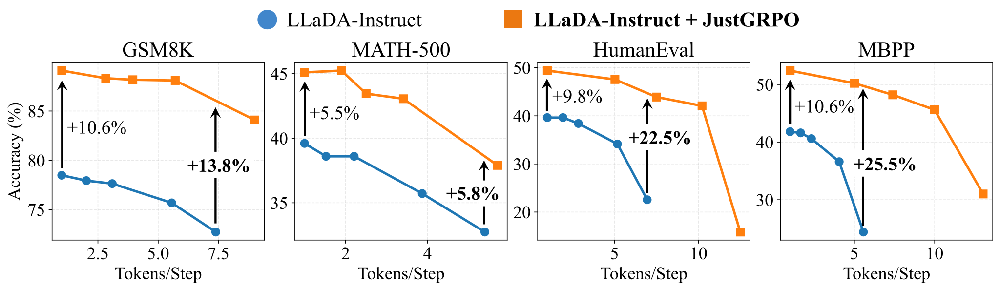
结果显示，训练后的模型完全兼容并行解码，而且在速度和准确率的权衡上优于原模型。有意思的是，并行度越高，优势越大：以 MBPP 为例，差距从每步 1 个 token 时的 10.6 个点扩大到约每步 5 个时的 25.5 个点。作者的解释是：AR 形式没有让模型过拟合某一条特定的轨迹，而是像一个训练用的“脚手架”，改进了模型的整体分布；改进后的分布对并行采样中的近似误差更有韧性。
5.4 训练效率：逐位置前向的代价，和只算 25% 的 JustGRPO-Fast
精确的 GRPO 在扩散模型上有一个结构性的代价。AR 模型加因果掩码，一次前向就能得到所有位置的条件概率；扩散模型没有因果掩码，必须为每个位置单独做一次前向（§4.2 的示意图）。d1、ESPO 这类方法用近似绕开了这个代价，所以人们可能以为精确优化在实践中太贵。作者用墙钟时间的对比来回应。
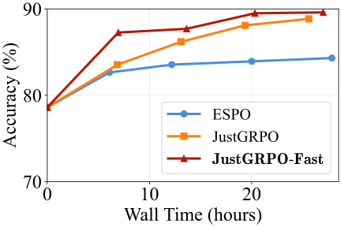
作者的论点是：尽管每次迭代更贵，JustGRPO 在“准确率—墙钟时间”的权衡上仍有竞争力，在相近的时间内追平了 ESPO 的最高点，并且还在继续提升。而且这个开销并不是根本性的。它的主要来源是计算式 (8) 里每个位置的比值 \(\rho_{i,k}\)。§3 发现推理是由少数高熵的分叉 token 驱动的，于是作者提出 JustGRPO-Fast：只在熵最高的 25% 位置上计算比值，省掉 75% 的这部分前向。每个 token 的熵在采样时就能顺手记下，所以挑出这些位置几乎不需要额外开销。实验中 JustGRPO-Fast 的权衡比默认的 JustGRPO 还要好。
为了对这些代价有个数量概念，下面按官方代码粗略推算一条 256 token 回答的计算量：
JustGRPO-Fast 的思路和 §1 提到的 “Beyond the 80/20 Rule” 一脉相承：那篇工作在 AR 模型上发现只在约 20% 的高熵 token 上做策略梯度就够了。v3 的附录把 Fast 版描述为“只在熵最高的 25% token 上做梯度更新”，v4 改为“只在这些位置计算比值”，两种说法指的是同一件事：不计算比值的位置，自然也不产生梯度。
5.5 两个补充：随机顺序做 RL，以及通用能力
随机顺序做 RL（附录 D，表 5）。§3.6 说明了随机顺序作为采样器不行。作者还把它放进自己的训练流程试了：为了能像 JustGRPO 一样精确分解似然，选定一个随机排列，并在整个训练中固定不变，按这个顺序采样和计算比值，其余完全相同。这个变体叫 JustGRPO-Random。
| 方法（LLaDA-Instruct，GSM8K） | 准确率 | 相对原模型 |
|---|---|---|
| LLaDA-Instruct（RL 前） | 78.6% | — |
| JustGRPO-Random（固定的随机顺序） | 82.2% | +3.6 |
| JustGRPO（从左到右） | 89.1% | +10.5 |
这组对比是全文控制得最干净的一组：训练流程、精确似然、在策略采样都一样，只有顺序不同。从左到右的提升是固定随机顺序的约三倍。它说明 JustGRPO 的效果不只是来自“似然变精确了”，顺序本身也很重要。不过要注意，它比较的是“从左到右”和“一个固定的随机排列”，而不是和现有方法实际使用的“按置信度的任意顺序”；后者的精确似然算不出来，本来就没法放进同一个流程比较。
通用能力（附录 E，表 6）。作者把训练好的 JustGRPO 检查点和原模型在四个非推理基准上对比：MMLU 65.5 → 65.8，MMLU-Pro 37.0 → 36.7，HellaSwag 74.6 → 74.8，ARC-C 88.5 → 87.5。变化都在 1 个点以内，作者认为通用能力基本得到保留，并解释说 AR 形式只是训练时的脚手架，网络结构、注意力模式和预训练知识都没有被改动。论文没有说明这里用的是三个任务检查点中的哪一个。
5.6 结果的份量
这一小节把上面的数字逐项放回它们的对照条件里，说明哪些结论站得住、哪些需要打折扣。
| 比较 | 匹配了什么 | 没有匹配什么 |
|---|---|---|
| §3 任意顺序 vs AR 顺序的 Pass@\(k\) | 同一模型、同样的步数（每步 1 个 token）、长度、温度、提示 | 两种顺序的最优温度不同（附录 B.1 显示取各自最优后差距缩小但仍在）；只比了置信度类规则，Neg-Entropy 规则已把 HumanEval Pass@128 的差距从 16 个点缩到 3 个点 |
| 表 1：JustGRPO vs 各扩散 RL 方法 | 同一底座 LLaDA-8B-Instruct，同样的四个基准和三种长度 | 基线数字引自原文；每步 1 个 vs 2 个 token、全参数 vs LoRA 不一致；LLaDA-1.5 数据不同、LLaDOU 结构不同 |
| 表 2：统一协议复现 | 全参数微调、每步 1 个 token、长度 256 | 基线由作者复现；代码任务只有 ESPO 一个基线；训练步数、采样量是否对齐没有说明 |
| 表 5：从左到右 vs 固定随机顺序 | 同一流程、同样的精确似然，只差顺序 | 只有 GSM8K 一个任务；对照不是现有方法用的置信度顺序 |
| 图 8：并行解码 | 同一采样器、同样的长度，横轴按实测的每步 token 数对齐 | 没有墙钟时间；没有其他 RL 模型的同样曲线 |
| 图 9：训练效率 | 同样 16 张 H100、同一任务 | 只有 GSM8K；ESPO 是在作者的环境中跑的，具体配置没有给出 |
噪声有多大。论文没有报告多次运行或误差范围。按二项分布粗估单次评测的标准误（推算）：GSM8K 1319 题、准确率约 89% 时约 ±0.9 个点；MATH-500 500 题、约 45% 时约 ±2.2 个点；HumanEval 164 题、约 49% 时约 ±3.9 个点。如果把两个模型当作独立评测，差值的标准误约为单个的 1.4 倍；由于两个模型答的是同一批题，真实的差值噪声会比这小一些，所以下面的判断偏保守：
- GSM8K 上 JustGRPO 比统一协议下最强的 SPG* 高 2.2 个点，约为差值标准误（约 1.3 个点）的 1.7 倍；比原模型高 10.5 个点，远超噪声。
- MATH-500 上比 SPG* 高 3.3 个点，和差值标准误（约 3.1 个点）相当，单看这一格并不确凿；但它在三种长度上都高于所有基线，方向一致。
- HumanEval 上比 ESPO* 高 7.3 个点，差值标准误约 5.5 个点（推算），约 1.3 倍，证据偏弱；而且代码任务只有 ESPO 一个统一协议下的基线。
检查点挑选。论文说所有数据集统一训练 125 步，没有提到在测试集上挑最好的检查点，这比一些从几十个检查点里挑最大值的工作更干净。但三个任务各训了一个模型（§4.3），表 1 的每一列都来自对应任务的专用模型，这和 d1 的协议一致，并不意味着一个模型同时擅长四个任务。
和 AR 模型比。论文没有和 AR 模型比较，既没有“同样大小的 AR 模型做同样的 GRPO”，也没有给出 AR 模型的参考分数。所以“从左到右训练的扩散模型”和“本来就是从左到右的 AR 模型”谁更好，本文不能回答。
任务与长度的范围。四个基准都是标准的数学和代码题，评测是零样本、贪心解码，提示模板沿用 d1。生成长度最长 512，训练只在 256 上进行，长度 512 上的提升（例如 HumanEval 48.7、MBPP 49.0）已经不如 256。没有测长思维链，也没有测扩散模型被认为占优的任务（数独、反转、填空）在 JustGRPO 训练之后是否受损。
“推理潜力”这根尺子本身。§3 的全部论证建立在“基础模型的 Pass@\(k\) 代表 RL 的上限”之上（§2.3 讲过它有争议）。论文没有测 RL 训练之后模型的 Pass@\(k\)，所以“从左到右 → 更高的 Pass@\(k\) → 更好的 RL”这条因果链，最后一环是靠表 1、2、5 的最终准确率间接支持的，而这些比较里，“顺序不同”和“似然精确与否”这两个因素只有表 5 把它们分开了。
英文原文 §5 ↗ · 表 1 ↗ · 表 2 ↗ · 图 8 ↗ · 图 9 ↗ · 附录 A ↗ · 表 5 ↗ · 附录 E ↗
6 相关工作：任意顺序值不值，以及扩散 RL 走过的路
扩散语言模型。受图像扩散成功的启发，研究者把扩散推广到离散文本。早期在词嵌入空间里做连续扩散的方法（Diffusion-LM、DiffuSeq、SSD-LM）面临优化和离散化的困难，后来主流转向直接在离散 token 上做随机遮盖的掩码扩散模型（SEDD、MDLM、MD4、RADD）。LLaDA 和 Dream 把它扩展到 7–8B 规模，性能和同规模 AR 模型相当。文献里讨论最多的两个优点，一是并行解码带来的加速（Fast-dLLM、EB-Sampler、Mercury、Gemini Diffusion、Seed Diffusion），二是任意顺序生成被认为可能有利于复杂推理。
任意顺序的价值。早期研究在受限任务上验证了任意顺序的好处：Ye et al. 2025（数独等规划任务）、LLaDA 的反转诗补全、以及 Token Ordering（Kim et al. 2025）。后来的工作把这种期待扩展到通用推理：有的发现扩散模型会自然地表现出“先打草稿”之类的非顺序行为（Dream-Coder、DiffuCoder），有的专门优化解码顺序（路径规划、LLaDOU）。也有几项工作用 Pass@\(k\) 来衡量扩散模型的推理潜力。但它们大多是在任意顺序的框架内提高性能，很少追问收益是否真的来自顺序的自由。最近 Du et al. 2025 的一篇博客质疑了任意顺序的必要性：让模型学习均匀分布的所有排列，会使它对数据分布的近似明显变松。那是在预训练层面；本文在推理和 RL 层面观察到了一个平行的失效模式。作者还引了一项信息论工作（Varshney & Goyal 2006）来支撑一个更一般的观点：序列的顺序本身携带了内容之外的结构信息，而任意顺序生成往往忽视了这一点。
Token Ordering 发现，在数独、斑马谜题上，让掩码扩散模型在推理时自己挑先填哪个格子，可以绕开训练时学不好的“难子问题”，6M 参数的模型就能胜过按正确顺序训练的 42M AR 模型。本文则说按置信度挑位置会绕开该探索的地方。两者其实是同一个机制的两面：先做容易的。数独只有唯一解，看的是单次能不能解对（相当于 Pass@1），先填确定的格子正好让剩下的格子变容易，绕开难点是好事。数学和代码题有很多条正确的推理路线，RL 需要的是多次采样能覆盖不同路线（Pass@\(k\)），而“难点”恰恰是选择路线的路口，绕开它就等于放弃了探索。顺便一提，附录 B.2 里比较的 Top-\(k\) Margin 规则正是 Token Ordering 提出的，它在 HumanEval 上的 Pass@128 比置信度规则高，但仍低于从左到右。更多讨论见旧版拆解页的 简答题 Q31。
扩散模型的 RL。扩散模型的 RL 面临 AR 模型没有的结构性障碍，根源都是去噪轨迹的组合爆炸。早期的尝试（d1、MMaDA 的 UniGRPO、DiffuCoder 的 coupled-GRPO）试图直接套用逐 token 的形式，但状态转移定义不清，只能依赖均场近似。于是领域转向序列级的视角（SPG、GDPO、ESPO），用各种替代量去近似算不出来的边缘似然。可这些方法普遍还残留着离策略的不一致：为了高效探索而用的启发式采样器，和扩散模型本身的分布不是一回事，梯度因此有偏，而且没有原则性的校正。有两个例外部分解决了这些问题：LLaDOU 引入一个辅助策略来建模“选哪个位置”，从而可以直接估计轨迹似然；TraceRL 沿着推理时实际走过的轨迹做优化，用一个逐步缩小的 MDP 把训练和推理对齐。但两者都保留了完整的任意顺序机制，隐含地认为它是必需的。本文的分歧正在这里：它质疑的是“任意顺序是否必需”这个前提本身，而不是在这个前提下改进估计。
英文原文 §6 ↗ · 相关：旧版拆解：dLLM 的强化学习
7 结论与局限
作者的结论是：扩散语言模型的直观魅力在于顺序的任意性，它常被看作在复杂推理路径中导航的有力机制；但对数学和代码这类通用推理任务，这种不受限制的灵活性可能反而限制了推理潜力，因为任意顺序生成倾向于把一条轨迹打磨好，而不是更广地覆盖解空间。这为引出扩散模型的推理能力指出了一条更简单的路：用标准的自回归目标做对齐，直接套用 GRPO，不需要为任意顺序做复杂的改造；有意在训练时限制探索的顺序，可以带来明显的推理提升，同时完整保留推理时的并行解码能力。作者希望这项工作能促使大家重新权衡扩散模型开发中“任意顺序 vs 从左到右”的取舍。
附录 E 末尾还提了一个方向：既然 JustGRPO 只在训练时用 AR 分解，推理时预计仍保留扩散模型的双向特性，那么能否让扩散模型反复修改已经写定的输出？这和 CDLM 一类的纠错方法、以及 ParallelBench 研究的双向上下文设置有关，作者认为它可以和 JustGRPO 互补。
结合前面各节，本站补充几条论文没有展开的局限：
- 规模与范围。RL 实验只在 LLaDA-8B-Instruct 上做，生成长度最长 512、训练只用 256；没有测更大的模型、块扩散模型或长思维链。
- 机制是相关性的。熵退化和覆盖下降同时出现，但没有干预实验证明前者导致后者；采样规则越像从左到右越好（附录 B.2），这和熵退化的解释一致，但也和“模型本来就是用大致从左到右的数据训练出来的”这种更朴素的解释一致。
- 代价。精确似然要求每个位置一次前向，计算量随回答长度线性增长；对长思维链（几千 token）来说，这比 AR 模型的一次前向贵上千倍（推算）。JustGRPO-Fast 能省四分之三，但在本站查阅的代码版本里尚未提供。
- 适用的任务。结论限定在“需要探索的多解任务”；在任意顺序确实有用的任务上（数独、填空），从左到右的 RL 是否会削弱这些能力，没有测。
后来怎么样了
这篇论文 2026 年 1 月 21 日首次挂到 arXiv，到本站整理时（2026-10）还不到一年，下面只列本站核对过的情况。
发表与获奖。论文被 ICML 2026 接收为口头报告（2026 年 7 月 8 日），并获得 ICML 2026 杰出论文奖（Outstanding Paper Award）；官方获奖页面列出的杰出论文共两篇，另一篇是 Chen、Chewi、Daskalakis、Rakhlin 关于扩散模型与对数凹分布高精度采样的理论工作。ICML 官方博客的获奖说明也把“RL 采样该用哪种解码顺序”列为这篇论文留下的开放问题。v4（2026-06-08）把标题从 “Why Arbitrary Order Limits Reasoning Potential …” 改成了现在的 “Rethinking the Value of Arbitrary Order …”，措辞整体更谨慎，并补充了表 2、块大小扫描、随机顺序和通用能力等实验。
代码与权重。官方仓库 LeapLabTHU/JustGRPO（MIT 许可）在 2026 年 1 月放出 GSM8K 的训练代码和检查点，3 月补齐 MATH-500 与代码任务的检查点，7 月加入 LoRA 训练。README 报告：按 “LoRA Without Regret” 的建议把 LoRA 学习率设为全参数的 10 倍、训练 200 步，长度 256 下 GSM8K 89.6、MATH-500 46.0、HumanEval 50.6、MBPP 48.6，与全参数微调（89.1、45.1、49.4、52.4）相当，只有 MBPP 低一些。这些 LoRA 数字只出现在 README 里，不在论文中。
后续工作（本站核对过摘要或相关段落）。
- Locally Confident, Globally Stuck（arXiv 2604.00375，2026 年 4 月）：把本文观察到的现象概括为“质量—探索两难”：低置信度重遮提高单次质量（Pass@1），却抑制探索、限制多次采样的收益（Pass@\(k\)）；随机重遮则相反。它从理论上证明低置信度重遮会约束所生成序列分布的熵，然后刻画了兼顾两者的最优分布，并用一个独立 Metropolis–Hastings 采样器在解码时近似它，在 MATH500、AIME24/25、HumanEval、MBPP 上取得比随机和低置信度重遮更好的权衡。它在引言中把本文列为这个两难的主要证据之一。与 JustGRPO 不同，它保留任意顺序，改的是采样器。
- DreamReasoner-8B（arXiv 2606.19257，2026 年 6 月，港大与北大等）：一个用于长思维链的块扩散推理模型。它专门检验块扩散是否也有类似的陷阱：用块大小 4 训练时，AIME 2024 上从左到右解码 52.1%、扩散解码 47.1%，差距不大；用块大小 32 训练时，AIME 2025 上扩散解码只有 21.3%，从左到右解码 33.3%。作者据此认为大块训练会削弱逐 token 的顺序推理，并提出从小块到大块的块大小课程学习。这和本文图 5“自由越大、上限越低”的趋势是一致的，只是这里变的是训练时的块大小。
- Order-Token Search（Shen et al.，arXiv 2601.20339，2026 年 1 月，与本文几乎同时，本文 §6 也引了它）：认为现有扩散解码器只走一条轨迹，限制了轨迹空间的探索，于是对生成顺序和 token 取值做联合搜索；摘要报告相对底座在 GSM8K、MATH500、Countdown、HumanEval 上分别提高 3.1、3.8、7.9、6.8 个点，达到或超过 d1-LLaDA。这代表了另一种回应：不放弃任意顺序，而是在推理时用搜索把它的潜力真正用起来。
截至 2026-10，本站没有找到独立团队对 JustGRPO 数字的复现，也没有找到正面反驳本文结论的工作；上面几篇引用本文的论文都是在接受这一现象的前提下，提出不同的应对方式。“RL 训练用从左到右、推理时并行”是否会成为扩散模型后训练的常规做法，还需要更多的时间和更大规模的验证。各种 dLLM RL 方法的对照，可以看 d1 精读的“后来怎么样了”和 TraceRL 精读。
作者
单位按论文署名。背景只列可公开查证的信息：作者主页、实验室与机构页面。
影响力
- 引用：见页首（Semantic Scholar 快照；该库收录时可能仍用 v1–v3 的旧标题）。
- 发表：ICML 2026 口头报告（会议页面），并获 ICML 2026 杰出论文奖（获奖列表，两篇杰出论文之一）。arXiv v1 2026-01-21，v2 2026-01-26，v3 2026-03-19，v4 2026-06-08（改为现标题）。
- 开源：LeapLabTHU/JustGRPO 有 287 个 star、16 个 fork（截至 2026-10-20），MIT 许可；核心的
grpo.py共 61 行，包含训练、评测脚本和 GSM8K、MATH-500、代码三个任务的全参数检查点与 LoRA 适配器（Hugging Face 用户 nzl-thu）。 - 被引用的方式：后续的解码与推理工作（如 2604.00375、2606.19257）把“灵活性陷阱”当作扩散模型 Pass@\(k\) 增长乏力的一个已知现象来引用（见上一节）。
延伸阅读
- 相关精读：Token Ordering、d1、TraceRL
- 旧版结构拆解：任意顺序的利与弊（Token Ordering、ParallelBench、Flexibility Trap），以及 简答题 Q31
- 旧版结构拆解：dLLM 的强化学习（d1、LLaDA 1.5、TraceRL）
- LLaDA 精读页：本文的底座，掩码扩散的训练目标、低置信度重遮与半自回归分块
- Dream 精读页：§3 的另一个被测模型，按熵挑位置的解码规则
- Fast-dLLM 精读页：并行解码的阈值规则与 KV 缓存
- 返回论文书架
原文：Zanlin Ni, Shenzhi Wang, Yang Yue, Tianyu Yu, Weilin Zhao, Yeguo Hua, Tianyi Chen, Jun Song, Cheng Yu, Bo Zheng, Gao Huang. The Flexibility Trap: Rethinking the Value of Arbitrary Order in Diffusion Language Models. arXiv:2601.15165（v1 2026-01-21，v4 2026-06-08），ICML 2026。论文以 CC BY 4.0 许可发布；本页的原文图 1–12 取自 arXiv HTML 版（v4）的图片文件，内容未做修改，其中图 3 和图 11 由 SVG 转成 PNG 以减小体积，版权归原作者。本页是对论文的中文精读笔记，正文与示意图由本站撰写和绘制，并非翻译；数字与结论以原文为准，标“推算”的为本站计算，标“读图估计”的为本站从原图读出的近似值。官方代码引自 LeapLabTHU/JustGRPO（MIT）。